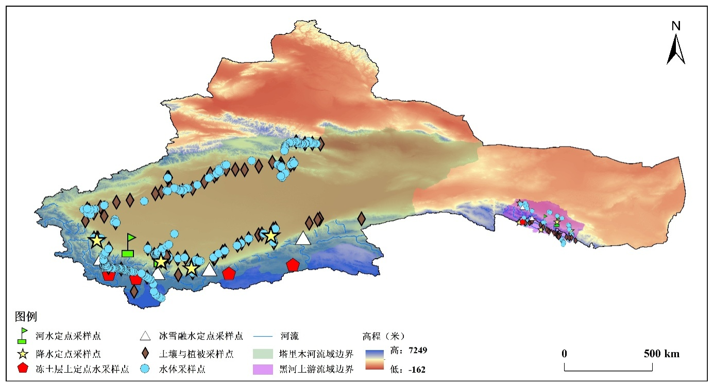
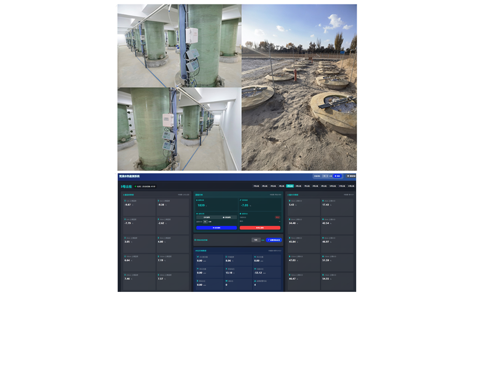
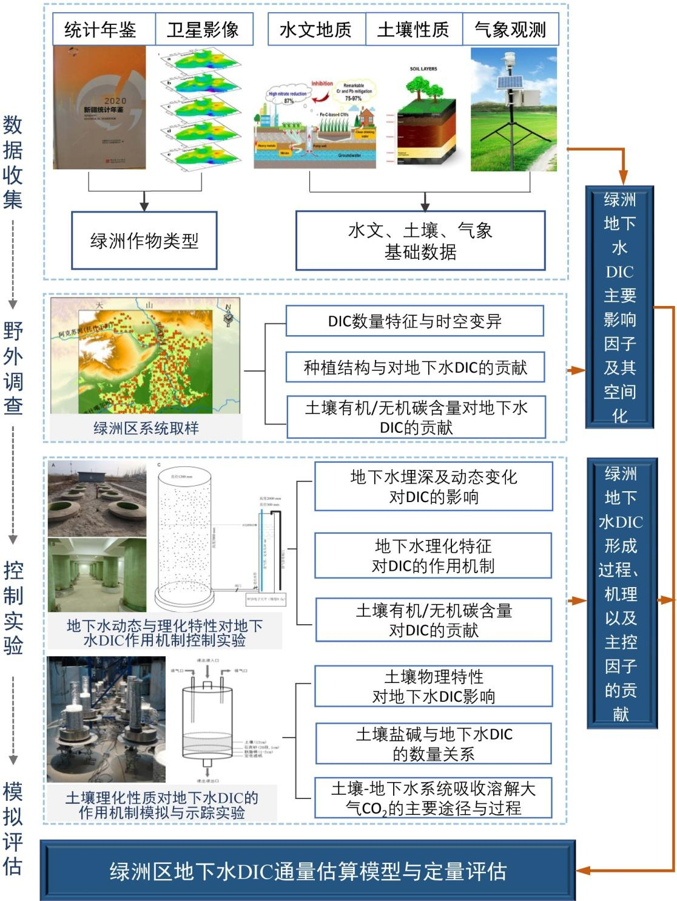
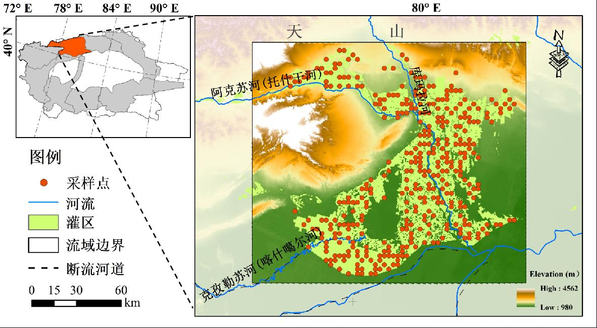

土壤盐分遥感
利用遥感数据、机器学习与空间分析方法识别土壤盐渍化特征。

Profile
现就读于中国水利水电科学研究院。研究围绕干旱区盐渍化遥感反演、地下水无机碳运移与污染物毒理效应展开，将遥感反演、机器学习和环境过程分析相结合。 Currently studying at the China Institute of Water Resources and Hydropower Research. His research focuses on remote-sensing inversion of salinization in arid regions, groundwater inorganic carbon transport, and the toxicological effects of contaminants, integrating remote sensing, machine learning, and environmental process analysis.
Research
利用遥感数据、机器学习与空间分析方法识别土壤盐渍化特征。
关注地下水系统中溶解性无机碳的迁移、转化与水文地球化学机制。
研究污染物暴露对生物体发育、器官损伤和炎症反应的影响。
Selected Publications
Education
博士在读
硕士
学士
Skills & Certificates
Professional Skills
Projects
参与“旱区内陆河流域水循环过程与水资源多尺度转化”相关工作，配合流域基础数据整理、野外观测采样与水文过程分析。项目围绕塔里木河、黑河等典型流域，开展水文气象数据融合、同位素水文采样、地下水-土壤-植物系统水热溶质监测平台建设及水文模型构建，为干旱区水资源管理与生态保护提供数据和模型支撑。 Participated in work related to water-cycle processes and multiscale water-resource transformation in arid inland river basins. Contributions focused on supporting basin data organization, field observation and sampling, and hydrological process analysis. The project integrates hydrometeorological data, isotope hydrology sampling, groundwater-soil-plant monitoring platforms, and hydrological modeling for water-resource management and ecological protection in arid regions.


负责构建阿克苏绿洲土壤属性与地下水DIC数据集，整合野外实测数据、世界土壤数据库（HWSD）、遥感资料及已有观测井水位水质信息，形成土壤盐分、土壤结构、质地、孔隙度、盐碱离子与地下水DIC相关数据。进一步采用结构方程模型、地理探测器和机器学习方法，定量识别土壤性质、地下水动态及水化学因子对DIC形成过程与通量的影响，为干旱区绿洲地下水DIC通量估算模型构建提供支撑。 Responsible for building an Aksu Oasis dataset linking soil properties with groundwater DIC by integrating field measurements, HWSD soil data, remote-sensing products, and existing groundwater level and hydrochemical observations. The dataset covers soil salinity, soil structure, texture, porosity, saline-alkali ions, and groundwater DIC-related variables. Structural equation modeling, geographic detector analysis, and machine-learning methods are used to quantify how soil properties, groundwater dynamics, and hydrochemical factors regulate DIC formation and flux estimation in arid oasis groundwater.

